Giorno 11 di 15 · Domenica 13 dicembre · Tokyo
Akihabara: la strada pedonale della domenica
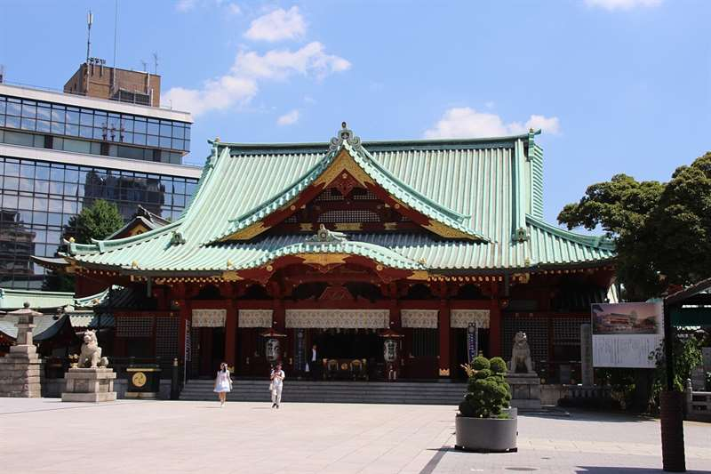
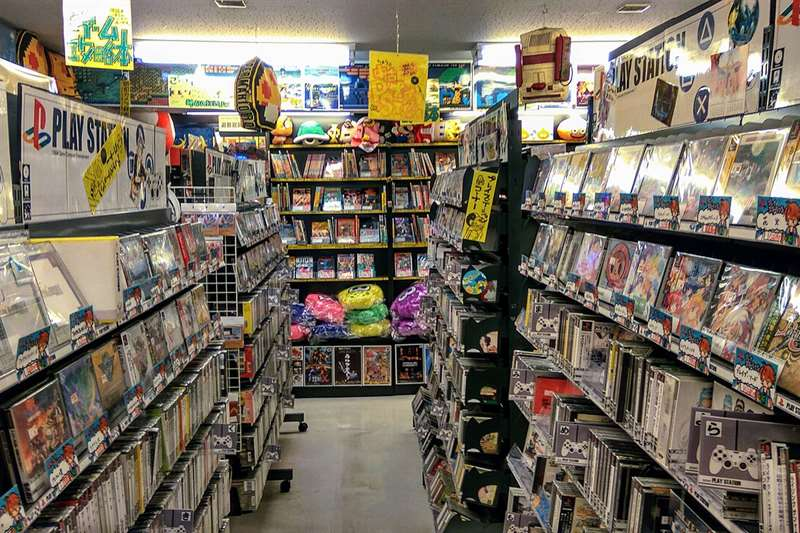
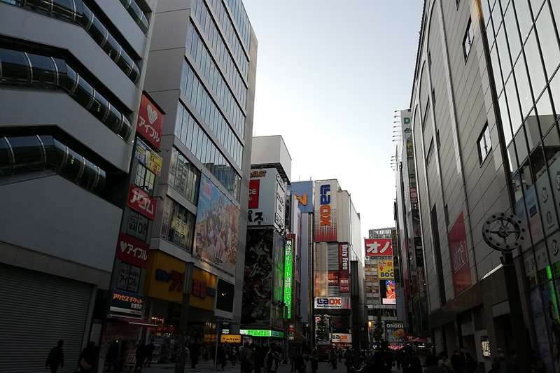
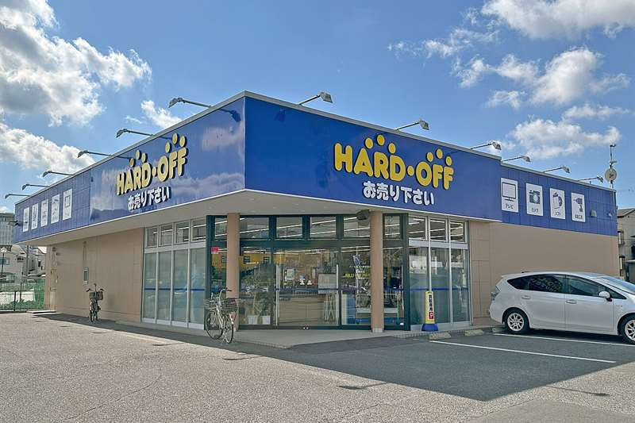
In sintesi
- 13:00 hokosha tengoku — Chuo-dori chiusa alle auto.
- Tutto il giorno retrogaming, figure, manga usati, junk; la sera si gioca da Hey.
- Da non saltare Beep, Trader, Book Off e l'angolo junk di Hard Off.
Itinerario
- 08:30Colazione da Shinpachi Shokudo, o al buffet dell'APA (vedi sotto).
- 09:05Higashi-Shinjuku → Kanda Myojin — la Oedo da sotto l'hotel fino a Hongo-sanchome, sei fermate e un quarto d'ora, poi dieci minuti a piedi fino al santuario. Da lì si scende ad Akihabara a piedi.
- 09:30Kanda Myojin — sulla collina sopra Akihabara. Santuario del 730 d.C. che oggi è il protettore ufficiale dell'elettronica e dell'IT: le aziende ci portano i server a benedire e si comprano omamori per la sicurezza informatica. Il contrasto fra il vermiglio del santuario e Akihabara sotto è perfetto.
- 10:30Akihabara Radio Kaikan — dieci piani accanto alla stazione, ognuno con negozi diversi: figure, carte, modellismo, dojinshi. Il punto di partenza classico, e il posto dove capite i prezzi "di listino" prima di andare a cercarli più bassi altrove. La sosta vera è al quarto piano, da AmiAmi, che apre alle 11 (girate prima gli altri piani e chiudete lì): centomila articoli, una vetrina lunga undici metri e il nuovo già scontato del 10-25% sul listino. È il posto giusto se una figure la volete nuova e non vi va di cercarla usata — e fa tax-free.
- 11:15Super Potato — tre piani di retrogaming, dal Famicom al Dreamcast, cartucce sciolte a scaffale, console e accessori. È il più famoso e il più fotografato, quindi anche il più caro: qui si viene a vedere i modelli e a farsi il metro dei prezzi, poi si compra da Beep, Surugaya e Hard Off. Mezz'ora basta.
- 11:50Beep — dall'altra parte dei binari, una decina di minuti a piedi: dal giugno 2026 sta sotto la Yamanote, al SEEKBASE (Kanda Neribeicho 15-1). Molto meno turistico di Super Potato: PC-88, X68000, schede arcade, cartucce sciolte in cassette da rovistare e un banco di hardware junk a prezzi ridicoli. La domenica 11:00-20:00, chiuso il mercoledì.
- 12:30Pranzo da Kyushu Jangara, il tonkotsu storico di Akihabara, o da Go Go Curry (vedi sotto).
- 13:30Chuo-dori pedonale — hokosha tengoku, il "paradiso dei pedoni": la domenica dalle 13:00 alle 17:00 (in inverno) la strada principale chiude al traffico e ci si cammina in mezzo. È il modo migliore in assoluto per vedere Akihabara, ed è esattamente il motivo per cui questa giornata è di domenica.
- 14:00Trader, e i piani che venerdì sono rimasti indietro — Mandarake Complex e Surugaya li avete fatti con calma venerdì al Giorno 9; oggi si torna solo al pezzo lasciato in sospeso. Il tempo va a Trader: due sedi, il negozio principale di otto piani e il 2号店, con giochi e Blu-ray usati e un reparto di console testate con garanzia del negozio, cioè il posto dove si compra l'hardware che deve funzionare davvero una volta a casa. A due passi dal negozio principale, sulla Chuo-dori verso Suehirocho, c'è Retro Game Camp (11-20): cartucce e console retro.
- 15:00Book Off Akihabara — manga usati a partire da 110 yen a volume, e un reparto giochi con Switch, PS4/PS5 e 3DS di seconda mano. Il posto dove manga e giochi Switch usati costano meno.
- 15:45Sofmap, Janpara e Iosys — i negozi di tech usata: portatili, smartphone, componenti, con il grado di usura scritto in etichetta e i prezzi che crollano al primo graffio. È qui che si trova la roba "perfettamente funzionante ma con un difetto estetico".
- 16:45Hard Off, secondo punto vendita l'ultimo giro, e il più economico — su Junk Street, la via dei banchi di componenti a ovest della stazione. Cinque livelli: dal seminterrato al secondo c'è Hard Off con l'angolo junk vero — cassoni di roba a 110-550 yen, cavi, joypad, console anni '90 vendute come viste — e il reparto giochi; al terzo e al quarto c'è Hobby Off, cioè figure e giocattoli usati. È qui che il Game Boy Color e le cartucce si pagano un terzo di Super Potato. Aperto 11:00-20:00. Regola numero uno: aprite sempre il vano batterie prima di accendere — la crosta bianca o verde è l'unico difetto che non si ripara.
- 17:30@Home Cafe (opzionale) — il maid café più famoso e più "accessibile": si entra, si paga un coperto, le cameriere disegnano sul ketchup e fanno cantare l'incantesimo che rende buono il cibo. È kitsch consapevole e dura un'ora.
- 18:30Cena da Niku no Mansei — carne, a cinque minuti a piedi dalla stazione, senza cambiare quartiere (vedi sotto). Niente Jimbocho stasera: il quartiere dei libri usati la domenica ha quasi tutte le saracinesche abbassate.
- 20:00Hey, la sala giochi retro — dopo cena, due minuti dall'uscita Electric Town della stazione, sotto l'insegna arancione enorme: Hirose Entertainment Yard, quattro piani di cabinati, famoso per gli shoot 'em up anni '80 e '90 e per i picchiaduro, da Street Fighter II in poi. L'ingresso è gratis, si paga a partita, quasi sempre 100 yen, con monete o carta IC (alcuni cabinati solo monete). Aperto tutti i giorni fino alle 23:30 circa. Un'ora basta: è la serata nerd della settimana, dopo una giornata a guardare giochi, finalmente se ne gioca uno.
- 21:15Rientro — la JR Sobu, la linea gialla, va diretta da Akihabara a Shinjuku in un quarto d'ora, poi un quarto d'ora a piedi; oppure una fermata di metro Hibiya fino a Naka-okachimachi e la Oedo fino a Higashi-Shinjuku, sotto l'hotel.
Le tappe su Google Maps
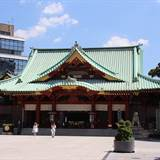
Kanda Myojin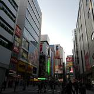
Radio Kaikan- Super Potato
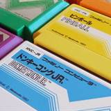
Beep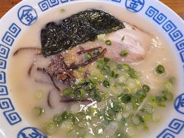
Kyushu Jangara- Book Off
- Trader
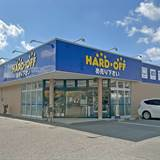
Hard Off (Junk Street)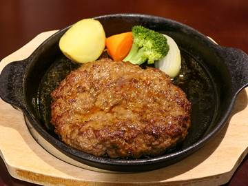
Niku no Mansei- Hey (sala giochi retro)
Toccate una tappa e si apre in Google Maps: da lì Indicazioni vi dice treno e binario partendo da dove siete.
La mappa si carica solo se la toccate, per non consumare dati: il tracciato è a piedi; dove l'itinerario dice treno o metro, prendete quelli.
Dove mangiare
- ColazioneShinpachi Shokudo (しんぱち食堂 西武新宿店), Kabukicho 1-26-3, dentro il quartiere a dieci minuti a piedi — aperto dalle 4 tutti i giorni: colazione giapponese col pesce alla brace (salmone, sgombro, sardina), riso, miso e sottaceti, sui 600 yen, quindici posti al banco, contanti. Il buffet dell'APA (2.200-2.400 yen, vedi Pratica) resta il ripiego per chi vuole stare sotto casa.
- Pranzo
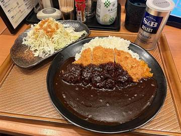
Kyushu Jangara (九州じゃんがら 秋葉原本店), storico di Akihabara, per un tonkotsu denso: tutti i giorni 11-22, diciotto posti, la domenica a mezzogiorno c'è coda; oppure Go Go Curry, curry di Kanazawa nero e densissimo con la cotoletta, servito in tempi da fast food, aperto tutti i giorni sulla Chuo-dori (se è pieno, la sede numero 1 è dall'altra parte della stazione, lato Showa-dori, a due passi da Beep). - CenaNiku no Mansei, Akiba Place, terzo piano — Mansei è la macelleria storica di Akihabara, quella del "palazzo della carne" accanto al ponte Manseibashi, un piano per ogni modo di cuocere il manzo, che ha chiuso nel marzo 2024 dopo trentatré anni. Il ristorante di bistecche e hamburg si è trasferito qui, a cinque minuti dalla stazione: bistecca di manzo sulla piastra calda, hamburg di manzo e maiale, e il katsu sando della casa da portarsi via. Aperto dalle 11, ultimo ordine alle 21:30, 150 posti: la domenica sera si entra. Se volete la griglia al tavolo, Yakiniku no Mansei è allo stesso marchio, ma lo yakiniku vero lo fate domani sera a Kabukicho.
- Da sapereil Gundam Café ha chiuso nel 2022, non cercatelo. E i café con i gufi pubblicizzati ovunque tengono animali notturni svegli e legati: lasciateli perdere.
Note e dritte
Perché proprio la domenica. Akihabara ha una cosa che esiste solo nel weekend: Chuo-dori chiusa al traffico, la domenica pomeriggio. La strada principale diventa una piazza lunga quasi seicento metri, con le insegne su sei piani da entrambi i lati e nessuna auto. È l'immagine che avete in testa quando pensate ad Akihabara, e la si ottiene solo oggi. Tutto il resto dell'itinerario di Tokyo è stato costruito attorno a questo.
Come funziona il quartiere: tutto sta su Chuo-dori e nelle due strade parallele, in un rettangolo di seicento metri. Non serve nessun mezzo, e si entra e si esce dai palazzi in verticale — ogni edificio è una serie di negozi impilati, quindi guardate sempre le insegne verticali, non le vetrine a piano terra.
Akihabara, seconda volta. Nel 2025 ci siete passati nel giorno libero, a caccia di nerdate. Resta nel programma perché per l'usato non ha rivali, ma stavolta è spezzata in due: venerdì al Giorno 9 i due palazzi grossi, Mandarake Complex e Surugaya, con i negozi vuoti; oggi la strada pedonale e il giro dal più caro al più economico. Nessuno dei due pomeriggi è una corsa.
La strategia giusta per comprare: il giro di oggi è costruito dal più caro al più economico, e finisce apposta con il più economico di tutti. Radio Kaikan e Super Potato servono a vedere i prezzi; Trader, Book Off e l'angolo junk di Hard Off servono a comprarli, insieme a quello che venerdì avete messo da parte da Surugaya e Mandarake. Se una cartuccia la vedete da Super Potato alle 11:15, non compratela lì: segnatevi il prezzo e ricontrollatelo alle 16:45 su Junk Street. Prima di pagare un pezzo importante, un controllo veloce su mercari.jp vi dice se il prezzo è nella norma. E ricordate che oggi passate davanti a più negozi che in qualunque altro giorno: se una cosa vi serve davvero, prendetela quando la vedete, perché nei negozi di usato il pezzo è uno solo.
Tutte le regole su usato, gradi di conservazione, junk, tax-free e compatibilità dei giochi stanno nella sezione Shopping — leggetela prima di venire qui, perché è la giornata in cui vi servirà davvero.
La zona sotto i binari: a ovest della stazione ci sono il Radio Center e il Radio Department Store, corridoi di banchetti di componenti elettronici, cavi, LED e ricambi. Non ci comprerete niente, ma è l'Akihabara originale degli anni '50 ed è rimasta lì.
Se oggi non gira. Solo oggi la strada è pedonale Il pomeriggio non si libera: Chuo-dori chiude al traffico solo la domenica, dalle 13 alle 17 (con pioggia o vento forte viene sospesa: la mattina controllate su akiba-information.jp), ed è la ragione per cui tutta la settimana di Tokyo è costruita così. Si liberano le due estremità. La mattina: si esce più tardi, si salta Kanda Myojin e si comincia da Radio Kaikan, o direttamente dal pranzo delle 12:30. La sera: dopo la cena da Mansei si rientra subito, saltando Hey. Niente di pagato o prenotato va perso. Se venerdì al Giorno 9 avete mollato il pomeriggio, Mandarake Complex e Surugaya entrano oggi al posto di Sofmap, Janpara e Iosys e del maid café: la tech usata è la cosa di oggi che vi interessa meno.